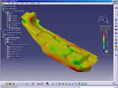

|
 (03.04.03)
Forming Technologies, CATIA CAA V5 tabaný üzerinde geliþtirdiði
CATFORM yazýlýmýný duyurdu: (03.04.03)
Forming Technologies, CATIA CAA V5 tabaný üzerinde geliþtirdiði
CATFORM yazýlýmýný duyurdu:
Sac parça simulasyonu ve tasarýmý konusunda yazýlým geliþtirici
öncü bir firma olan Forming Tecnologies firmasý CATIA V5R10
üzerinde calýþacak olan CATFORM CAA V5 Based yazýlýmýnýn duyurusunu
yaptý. Dassault Systemes ile yakýn bir iþbirliði içinde geliþtirilmiþ
olan CATFORM yazýlýmý, CATIA V5 ile ürün geliþtiren kullanýcýlara
girift sac parçalar üzerinde form verilebilme analizi yapabilmelerini
ve parça açýnýmý bulmalarýný saðlayacaktýr.
Yapýlan
araþtýrmalar, otomotiv endüstrisinde, parçalar üzerinde yapýlan
mühendislik deðiþikliklerinin %33'ünün form verme problemlerinden
kaynaklandýðýný ortaya koymuþtur. CATFORM programý, dakika
ile ölçülecek kýsa bir süre içinde bu form verme problemlerini
belirlemekte ve böylece ürün ve proses geliþtirme sürelerini
azaltýp, önemli maliyet tasarrufu saðlamaktadýr.
Bu
yazýlým, parca geometrisini, malzeme özelliklerini, kalýp
içindeki sürtünmeleri ve pot çemberi kuvvetini göz önüne alarak
analizi gerçekleþtirmektedir. CATFORM, Dassault Systemes PLM
çözümleri ile tam bir entegrasyon içindedir.
Dassault
Systemes CATIA simulasyon ve Araþtýrma Geliþtirme Direktörü
Severin Lanfranchi konuyla ilgili þunlarý söylemiþtir: "Otomotiv
ve uçak-uzay mühendisleri, form verilebilme ve maliyet analizlerini
PLM (Ürün yaþam çevrimi yönetimi) proses'i içerisinde hassas
ve prosesin hemen baþlangýcýnda yapmaktalar. Sonuç olarak,
potansiyel hatalar azaltýlmakta ve ürünün pazara çýkma zamaný
kýsaltýlmaktadýr. CAA V5 yazýlým ortaklýk programý üyesi olarak,
FTI hýzlý bir þekilde entegre bir V5 uygulamasý geliþtirerek
CAA V5 yapýsýný güçlendirmiþtir."
Daha
fazla bilgi için: www.cadem.com.tr/haber/fti-catform-caa-v5.html
(02.04.03)
Sitemize CATIA V5R10 Yenilikleri hakkýnda Türkçe PowerPoint
sunumlar eklendi:
INFRASTRUCTURE > catiaV5R10-yenilikler-infra.pps (0.217MB)
PART DESIGN > catiaV5R10-yenilikler-part.pps (0.418MB)
GENERATIVE SHAPE DESIGN > catiaV5R10-yenilikler-yuzey.pps
(1.36MB)
CAM > catiaV5R10-yenilikler-cam.pps (8.27MB)
Bu dosyalarý indirmek için: www.cadem.com.tr/catia
(17.03.03)
Cadem standý, 13-16 Mart 2003 tarihleri arasýnda düzenlenen
18. Uluslararasý Mücevher, Taký, Gümüþ, Saat ve Malzemeleri
Fuarý'nda büyük ilgi gördü:
Cadem, 13-16 Mart 2003 tarihleri arasýnda Ýstanbul CNR Fuar
Merkezi'nde düzenlenen 18. Uluslararasý Mücevher, Taký, Gümüþ,
Saat ve Malzemeleri Fuarý'nda kuyumculuk sektörüne yönelik
yeni ürün tasarým ve model imalatý konusundaki en son teknolojileri
sergiledi...Standýmýza büyük ilginin olduðu Fuar süresince
ATOS II SO 3D sayýsallaþtýrma sistemi, FreeForm Modelleme
sistemi, 3D Systems Viper si2 ve ThermoJet hýzlý model imalat
cihazlarý tanýtýldý...
Bu haberin devamý ve fuar sýrasýnda standýmýzda çekilmiþ bazý
fotoðraflar için:
www.cadem.com.tr/haber/mucevher2003-yapildi.html
Ýrtibat:
Cadem CAD/CAM Destek Merkezi A.Þ.
www.cadem.com.tr
Metropol Center 32/52 Merter / Ýstanbul
Tel: (212) 481 75 09
|